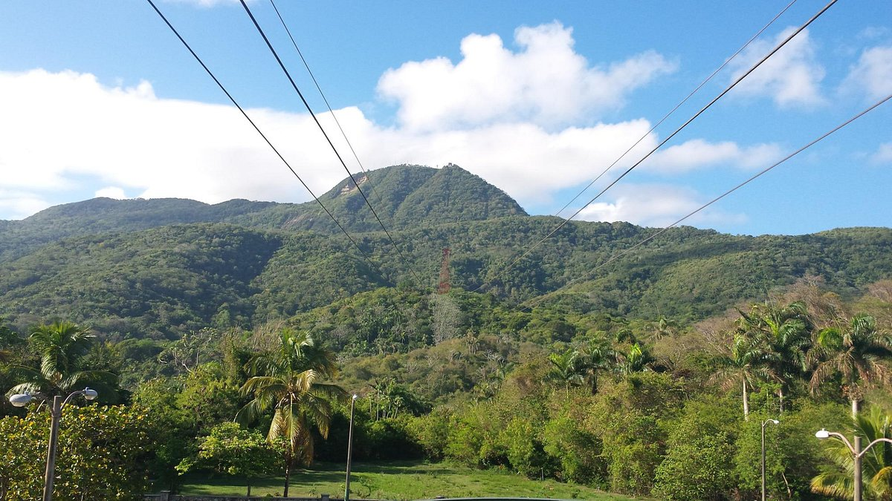
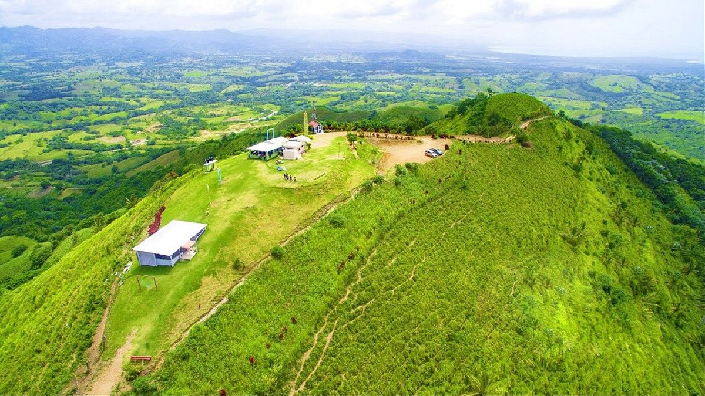

Mount Isabel de Torres
La monte Isabel de Torres de unos 850 metros sobre el nivel del mar es una de las paradas obligatorias si vas a Puerto Plata. Una vez ahi (se sube con un teleferico) se puede disfrutar de la vista de todo Puerto Plata. Hay una estatua de Cristo Redentor como la de Rio de Janeiro, un bonito parque, laguna con tortugas y peces, una casa tipica dominicana y una cueva. Vale la pena subir y pasar una mañana ahi.

Pico Duarte

Para amantes de la naturaleza y en buen estado de forma, subir el pico Duarte y combinarlo con caminatas por el Valle del Tetera, es una gran experiencia dentro de este maravillosos país.
Montaña Redonda
Montaña Ronda en Miches, es un lugar inolvidable, rodeado por la naturaleza del campo, disfrutar de una vista panorámica, donde el reflejo de las lagunas se combinan con el amanecer en la playa y el atardecer con el verde de las montañas, aire limpio, paz y tranquilidad.
